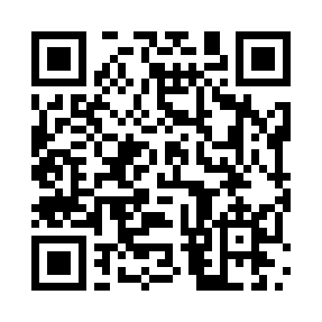

النشرة اليمنية اليومية
شبكة أبو الأنوف الإعلامية
العدد (20) — الاثنين 19 أكتوبر 2026م
النشرة المصوّرة — العدد الحالي
صورة عدد الاثنين 19 أكتوبر 2026م.
 حفظ النشرة المصوّرةفتح ما وراء الخبر مباشرة
حفظ النشرة المصوّرةفتح ما وراء الخبر مباشرةرمز QR للعدد المباشر
حفظ رمز QR للعددما وراء الخبر — رابط ثابت
هذا القسم مخصص لتحليل العدد الحالي. عند نشر عدد جديد، يُحدَّث محتوى هذا القسم مع بقاء عنوانه الثابت كما هو.
قالب اختبار: أدرج هنا نص التحليل الموثق للعدد الحالي قبل النشر النهائي. لا يُعد هذا الموضع مادة تحليلية مكتملة.

حفظ QR لما وراء الخبرالإعلان الثابت — شبكة أبو الأنوف الإعلامية
يظهر هذا الإعلان في الموضع نفسه في قالب كل عدد.
 فتح الموقع العام
فتح الموقع العامبقية صفحات العدد
القالب التنظيمي المقترح لاستكمال العدد. أضف النصوص النهائية ومصادرها قبل النشر؛ لا يحتوي هذا الاختبار على أخبار إضافية غير موثقة.
الصفحة الثانية: التطورات الميدانية
الصفحة الثالثة: التعليم والمعلم
الصفحة الرابعة: السياسة والمواقف الرسمية
الصفحة الخامسة: الملف الإنساني
الصفحة السادسة: ما وراء الخبر
الصفحة السابعة: قبسات من نور لليمن